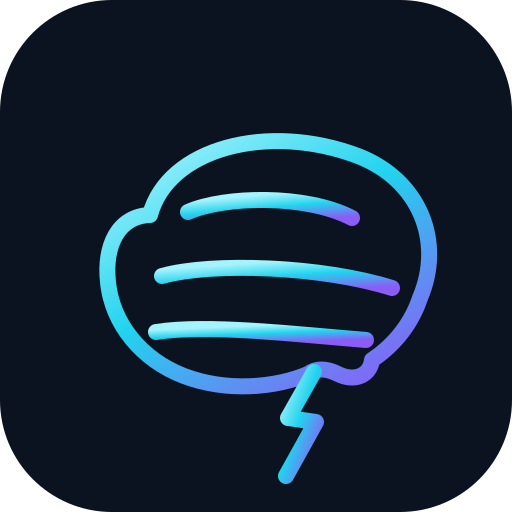
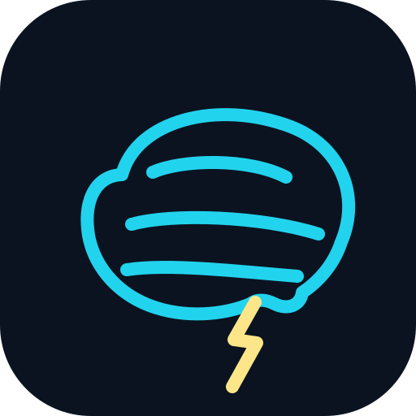
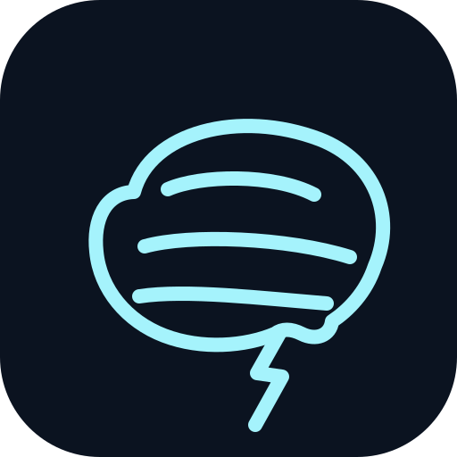

N1
Bio Gradient

Degradado cyan → violeta (paleta BIO: phosphorCyan → neuralViolet). Cohesión cromática total, mismo trazo en cerebro y rayo. La apuesta más cercana a tu referencia pero on-brand.
Cerebro en line-art estilo referencia, con rayo integrado saliendo del tallo cerebral (la ignición literal desde el sistema nervioso). Tres variantes de color — todas con la misma geometría premium.



N1N2N3N1N2N3N1N2N3N1N2N3